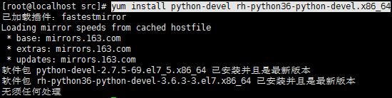

YouCompleteMe Installation
Acutally, there’re pretty detailed instructions for installation on YCM(YouCompleteMe)’s github page. However, the installation steps on CentOS and Debian cannot be found.
Complete YCM Installation on CentOS
Install YCM with Vundle
Vundle is a Plugin Manager for Vim. It provides an easy way to install, update and configure Vim Plugins.
- Download Vundle
1
git clone https://github.com/VundleVim/Vundle.vim.git ~/.vim/bundle/Vundle.vim
- Edit .vimrc
Put the following scripts in your .vimrc. You can also add other Plugins.1
2
3
4
5
6
7
8
9
10
11
12
13
14
15
16
17
18
19
20
21
22
23
24
25
26
27
28
29
30
31
32
33
34
35
36
37
38
39
40
41
42
43set nocompatible " be iMproved, required
filetype off " required
" set the runtime path to include Vundle and initialize
set rtp+=~/.vim/bundle/Vundle.vim
call vundle#begin()
" alternatively, pass a path where Vundle should install plugins
"call vundle#begin('~/some/path/here')
" let Vundle manage Vundle, required
Plugin 'VundleVim/Vundle.vim'
" The following are examples of different formats supported.
" Keep Plugin commands between vundle#begin/end.
" plugin on GitHub repo
Plugin 'Valloric/YouCompleteMe'
" plugin from http://vim-scripts.org/vim/scripts.html
" Plugin 'L9'
" Git plugin not hosted on GitHub
"Plugin 'git://git.wincent.com/command-t.git'
" git repos on your local machine (i.e. when working on your own plugin)
"Plugin 'file:///home/gmarik/path/to/plugin'
" The sparkup vim script is in a subdirectory of this repo called vim.
" Pass the path to set the runtimepath properly.
"Plugin 'rstacruz/sparkup', {'rtp': 'vim/'}
" Install L9 and avoid a Naming conflict if you've already installed a
" different version somewhere else.
" Plugin 'ascenator/L9', {'name': 'newL9'}
" All of your Plugins must be added before the following line
call vundle#end() " required
filetype plugin indent on " required
" To ignore plugin indent changes, instead use:
"filetype plugin on
"
" Brief help
" :PluginList - lists configured plugins
" :PluginInstall - installs plugins; append `!` to update or just :PluginUpdate
" :PluginSearch foo - searches for foo; append `!` to refresh local cache
" :PluginClean - confirms removal of unused plugins; append `!` to auto-approve removal
"
" see :h vundle for more details or wiki for FAQ
" Put your non-Plugin stuff after this line - Plugin Install
Launch vim and run:PluginInstall
Please be patient. It could take a while to complete the installation.
Install Dependencies for Compiling
- Install development tools and CMake:
1
yum install build-essential cmake
- Make sure you have Python headers installed:
1
yum install python-devel rh-python36-python-devel.x86_64

In case python3 is not installed on your CentOS:
Enable Software Collections:
1
sudo yum install centos-release-scl
Install Python3:
1
sudo yum install rh-python36
If you want to use python 3.6 as default
1
scl enable rh-python36 bash
Compile YCM
- Compiling YCM with semantic support for C-family languages:
1
2cd ~/.vim/bundle/YouCompleteMe
./install.py --clang-completer - Compiling YCM without semantic support for C-family languages:
1
2cd ~/.vim/bundle/YouCompleteMe
./install.py - To simply compile with everything enabled, there’s a –all flag.
1
2cd ~/.vim/bundle/YouCompleteMe
./install.py --all